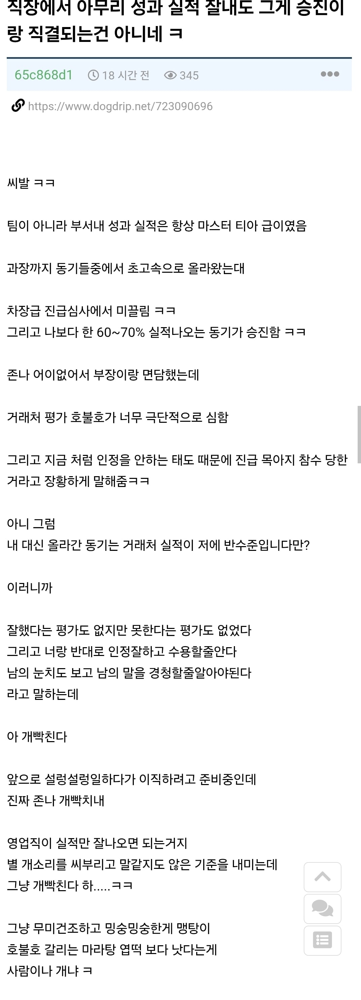
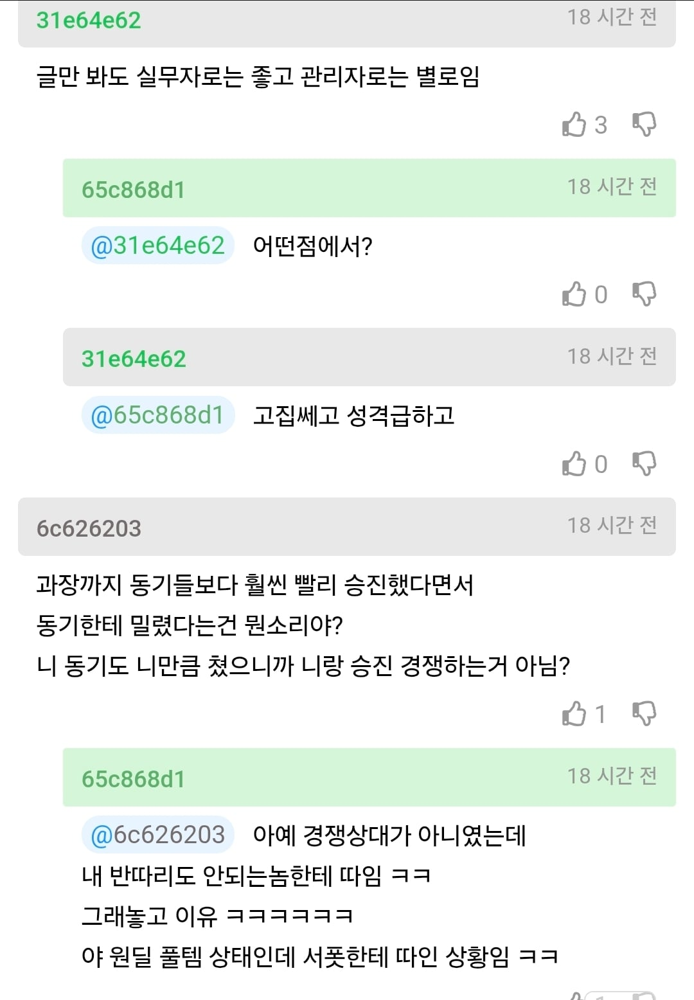
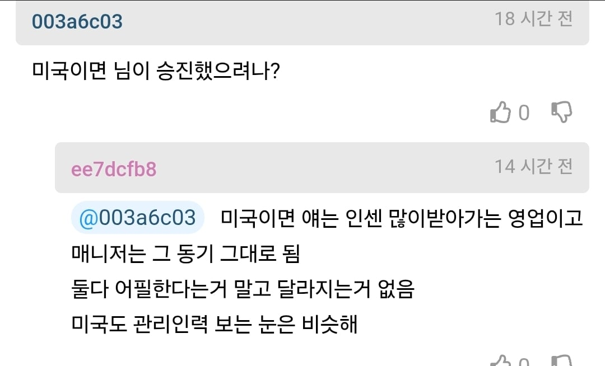
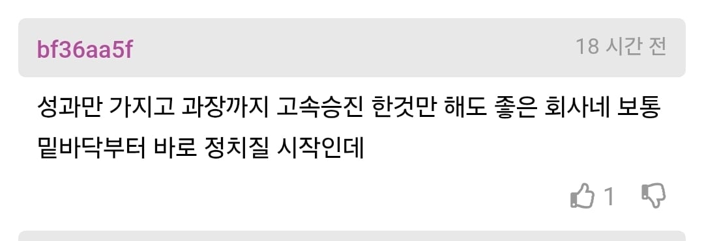
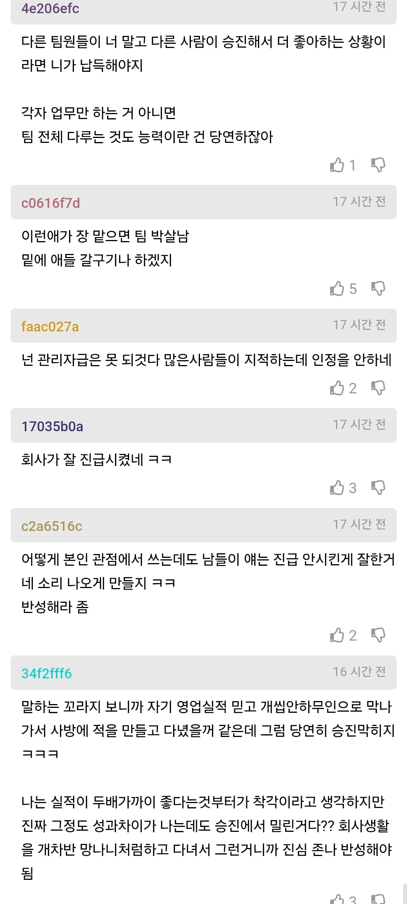
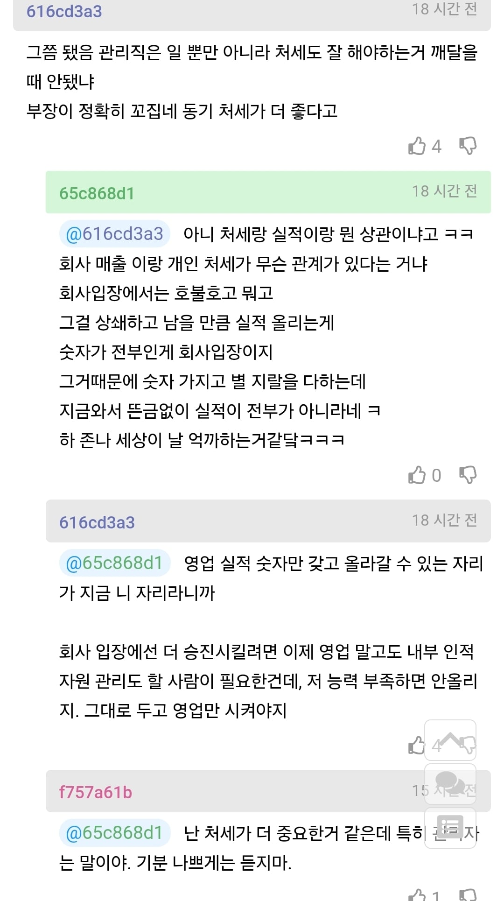
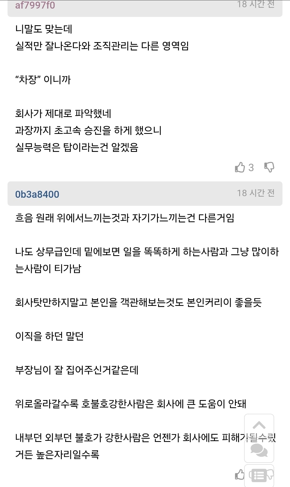
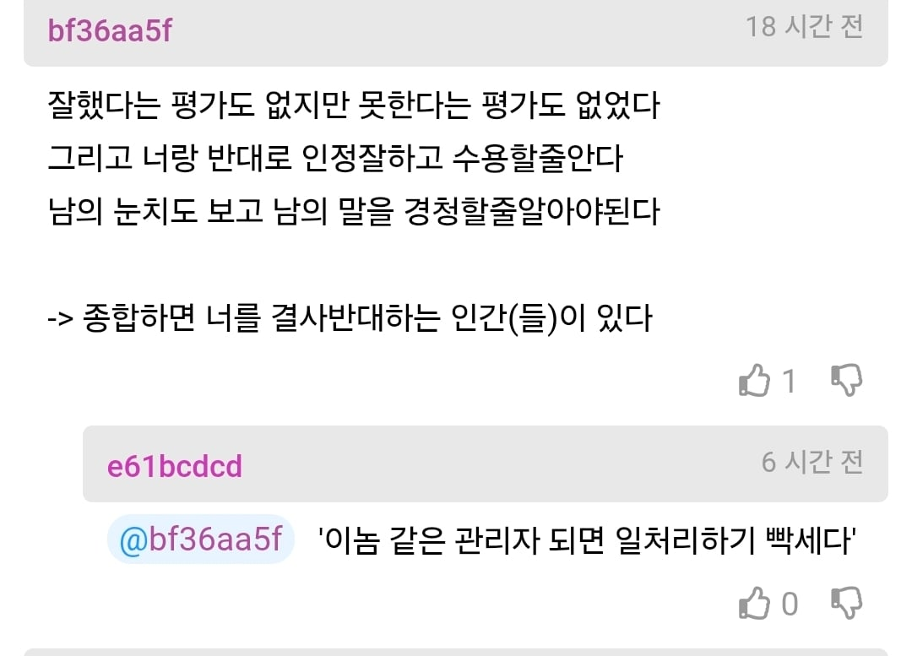

ㅇㄱㄹㅇ 사람이 존나 멍청해보임
되 돼까지는 그럴수있어보이는데
ㅔ ㅐ는 진짜 지능낮아보임
색스
미안에..
적을 만들어놓고 다니니 저러지 ×
애초에 직급 직책 다른거라
관리자 어쩌구는 어느정도 뇌피셜들인거 같고
(사바사, 부바부지만 차부장 달고 직책없이 실무 많이함 직책이 그렇게 많이 남지 않음)
그냥 본문 막댓이 맞는듯
꽃길만들어서 밀어주는건 힘들어도
똥 뿌리기는 어렵지 않음
부장이 현명하네
혼자서 3~4명 업무도 커버 가능한가... 관리자 됐을때 밑에 다 나가면 어뜨캄
독립적으로 일하고 실력이 전부면 올라갔겠지만
같이 일하는 팀이 있고 팀원도 챙겨야되면 미끄러질수있다고 봄
글만 봐도 팀장으로서의 능력은 개판으로 보이는데 ㅋㅋㅋ
높은분들 이야기하는거 들었는데 승진 대상자들 사이에서 성과만 좋은사람보단 실력좀 떨어져도 인성좋고 두루두루 잘지내는 성격좋은사람 올린다 하더라 쟤는 딱 글만봐도 인성좋아보이진 않음 평판 관리해야함
거래처에서 갑질을 얼마나 했을까
거래처 평, 인간 관계, 주변 평가,
사람을 통솔하는 측면을 기대하기엔 못났나 봄
실적만 좋으면 그만이지라면
관리자보단,
특별 대우받는 영업 실무진이 끝이겠지.
말투가 저런새끼가 영업을 잘했다는 내용부터 쌉구라라는 생각이 든다
우리회사도 저런새끼있어
일만잘함 딴건 다 개병신같고
다른 일을 해야 승진할수있는데 멍청하게 승진해도 같은일을 할꺼라고 생각하니까 저러지 한단계올라갈수록 직업이 바뀌는데
종회
영업이 고객사에게 호불호가 갈리고말고가있냐 걍 라인장못타거나 밉보인거지
쟤는 실무딱인데
이직한다면 패배자로 보일것 같으니
인센조정이나 받는게나음
그걸 거절하면 인센 잘주는데로 이직하는게 맞고
저 회사가 개폐급인게 쟤정도면 고춧가루 뿌릴수도 있는데
섭섭하게 한게 개폐급같은짓임
막말로 거래처 들고 경쟁하는 회사 가면 손해임
그러니 차장은 못해도 차장은 못받는
실무자 전용 인센을 주는방향으로 가야지
승진은 성과에 대한 트로피가 아니다.
우리회사에도 있음 일머리없고 뒤에서 사람들이 욕하는데 본인만모름 후배가 10년일찍 파트장달고 정작 본인은 퇴직때까지 직책안달아줌
글 꼬라지만 봐도 인망없어 보이긴 함 ㅋㅋㅋ
근데 지가 차장급 부장급 올라가서도
영업 뛸 거 아닐 거 잘 알지 않나?
당연 그 정도 위치가 되면
밑에 애들 동기부여하고 챙기고 해야지
이직도 힘들거 같은데 업계 평판 작살나서
15년째 과장이다 아무의미 없다
지금까지 내 경험 상 ㅐ ㅔ 구분 못하는 새끼 치고 정상인 걸 못 봤음